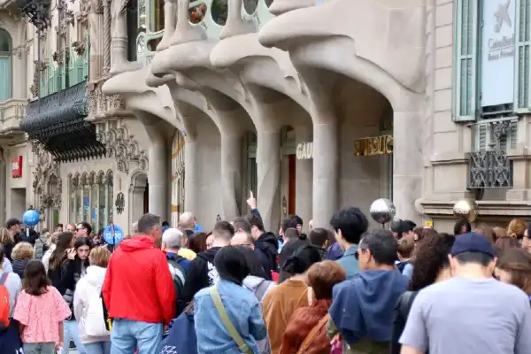
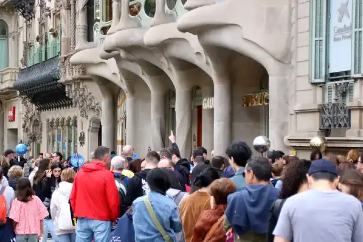

Visitor Message
Origin
The Official Chamber of Commerce, Industry and Navigation of Barcelona was created in 1886, coinciding with a period of major urban and cultural transformations that would place Barcelona once again on the international scene, from the Cerdà Plan to Catalan Modernism.
Catalonia Description
Population: 8.012.231
Demographic: 50.66% Female,
49.34% Male
Education: 2.679 Schools,
12 Universities
Diversity: Italian, Colombian, Argentinean, French, Venezuelan, Marrocan, Bolivian, Rumanian, Brasilean and Indian
Events
- Power BI news to increase productivity
- Regulations on commercial and industrial packaging: don't be left behind
- FEM DEO: Leadership in key F
About Catalonia
Catalonia is an autonomous community of Spain, considered a historical nationality in its Statute of Autonomy. Located in the northeast of the Iberian Peninsula, it occupies a territory of approximately 32,000 km² bordered to the north by Andorra and the French region of Occitania (Haute-Garonne, Ariège, and the Pyrénées-Orientales), to the east by the Mediterranean Sea along a maritime strip of approximately 580 kilometers, to the south by the Valencian Community (province of Castellón), and to the west by Aragon (provinces of Teruel, Zaragoza, and Huesca). This strategic location has fostered a very close relationship with the territories of the Mediterranean basin and with continental Europe. Catalonia is made up of the provinces of Barcelona, Girona, Lleida, and Tarragona. Its capital is the city of Barcelona.
 
